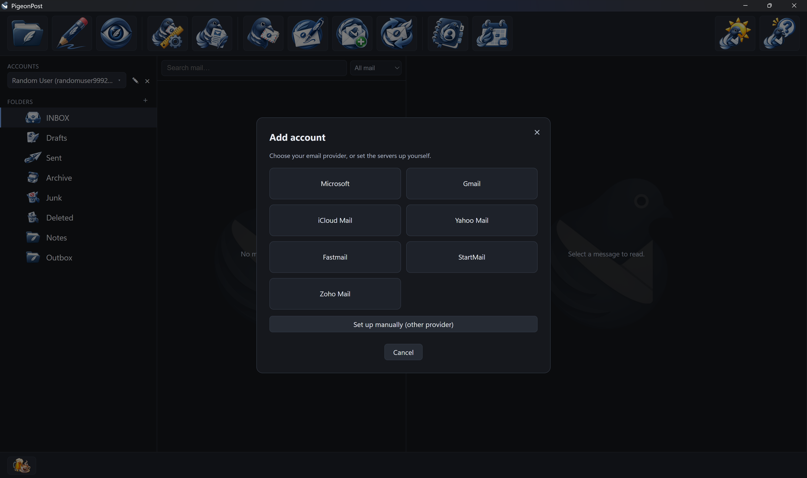
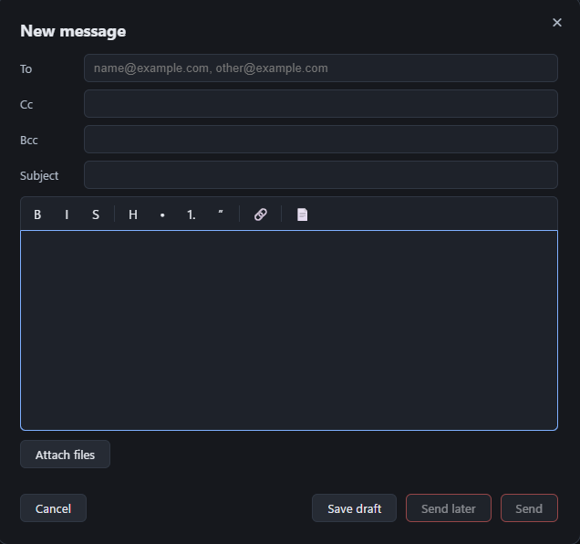
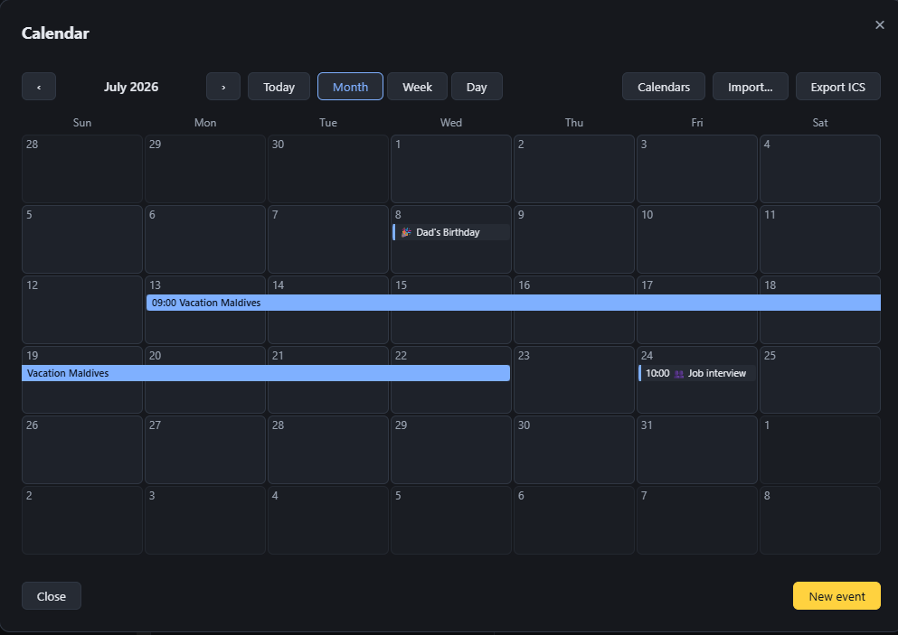

PigeonPost is a calm, local-first desktop email client with a built-in calendar and contacts, free and open source. Your email stays where it already lives, with your provider (Gmail, Hotmail and Outlook.com, iCloud, Fastmail and friends), so nothing has to move in and nothing is stranded if you leave. No cloud in between. No account to create. No subscription.
Because your mail stays in your existing account, trying PigeonPost costs you nothing and leaving costs you nothing.
Switch in under a minute: add your account and you are in, synced straight away. Then find anything, instantly, even offline.

Adding an account, over the main window. The same toolbar carries mail, contacts and calendar.
A familiar three-pane window that stays out of your way. Everything sits where you expect it and nothing nags you for your attention.
Folders, a message list and an optional reading pane you toggle with F8. Sort by date or group a thread into a conversation, with the To and Cc correspondents shown on open. Double-click a message and it pops out into its own window.
The message list is virtualised, so it stays fluid in folders of tens of thousands of messages instead of stalling.
Full keyboard navigation with a visible focus ring and menu accelerators. Multi-select with Ctrl or Shift, bulk delete, mark, star and move, a right-click menu and reader tabs.
No ads. No feed. Nothing reordering your inbox behind your back. The window does what you ask and then gets out of the way.
The switch is not a one-way door. This is the part that matters most if you have years of mail you are not willing to risk.
PigeonPost connects to your existing account over IMAP and keeps a local, searchable copy for offline use. For an IMAP account there is nothing to import on the way in and nothing stranded on the way out. Stop using PigeonPost and your mailbox is exactly where it always was.
Calendars import and export as .ics (RFC 5545) and round-trip with Outlook and Thunderbird. Contacts export as vCard at full fidelity (postal addresses and birthdays included) or as CSV for names, emails and phone numbers. A .eml file opens straight in the app and on Windows PigeonPost can be your default .eml handler. It can also register as your system's default email app on Windows, macOS and Linux, so a mailto: link opens a new message here instead of in the client you left.
No importer, no export dance. For an IMAP account, moving in is adding the account and pressing sync.
Run the installer for your platform: the Windows setup, the macOS DMG or the Linux Flatpak. There is no PigeonPost account to create, so once it is installed you go straight to adding your mailbox.
Pick your provider and the wizard fills in the servers. Gmail, iCloud, Yahoo, Zoho, Fastmail and StartMail connect with an app password. Microsoft opens a browser sign-in. Any other IMAP or POP3 mailbox takes its own host and port.
Your mail, folders and read state come down into a local, searchable copy. Your mail stays in your account with your provider the whole time.
The questions a Thunderbird or Outlook user actually asks, answered plainly. Where the answer is no, we say so.
Will I have to migrate years of mail?
No. PigeonPost talks to your existing account and caches a local copy. The mail itself never leaves your provider.
What if I try it and want to go back?
Then you close it and nothing has changed. Your accounts were never moved, so they are still live in your old client. Your calendar and contacts export back out in standard files.
Does my Gmail or iCloud account work?
Yes, through an app password. A wizard fills in the servers for Gmail, iCloud, Yahoo, Zoho, Fastmail and StartMail.
I use a Google Workspace account for work.
That one will not work here. Workspace is OAuth-only, so an app password is refused by Google. Personal Gmail is fine with an app password.
Is my Microsoft password safe?
You sign in through Microsoft in your own browser, so PigeonPost never sees your password. It keeps your Microsoft sign-in token in your OS keychain.
Can opening a message track me?
No. HTML renders in a sandboxed frame that runs no scripts and makes no remote requests. Remote images stay blocked until you load them, so opening a message cannot tell the sender you read it.
It is one developer. What if it stops?
It is GPL-3.0 with the full source on GitHub, free to read, fork or continue. Your mail stays with your provider and your calendar and contacts live in standard files, so nothing is trapped.
Does it work offline?
Yes. Cached mail reads with no connection. Anything you write offline queues in a per-account outbox and delivers when you reconnect.
Which platforms?
Windows, macOS (Apple Silicon) and Linux, each with its own native installer: a Windows setup program, a DMG and a Flatpak.
Will it choke on my huge folders?
No. The message list is virtualised and stays fluid in folders of tens of thousands of messages.
Search is where the big clients are most disliked. Because your mail is already cached on your machine, PigeonPost searches a local index and answers the moment you type, with no server round-trip.
Search everything cached: subject, sender, recipients, attachment names and the full text of mail you have opened, with operators like from:, has:attachment and dates, ranked by relevance. The index lives on your machine, so results come back instantly and work with no connection.
Passwords live in your OS keychain, never in a database. Microsoft sign-in stores a token there instead of a password. No PigeonPost cloud sits in the path; your mail is with your provider and on your machine. The local cache itself is ordinary data on your own disk, not encrypted at rest: pair it with your OS disk encryption (BitLocker, FileVault) if you want that protection.
The everyday windows you actually work in, in the dark theme.

Writing a message: rich text with a signature, reusable templates and file attachments.

The calendar: a multi-day event spans its days as one bar, alongside month, week and day views, reminders and emoji categories.
The everyday workflows that carry daily use, grouped so you can see the shape at a glance.
I wanted a desktop client that was free, dependable and laid out the way I actually work. The mainstream options did not fit. Outlook 365 wanted a subscription. Thunderbird is free and open but community-governed, so a bug I hit waits in someone else's queue and the things I reach for most are buried. PigeonPost is my answer: GPL-3.0 and free, a calm predictable interface where everything is easy to find. Oliver Ernster.
The core logic carries a 100% test-coverage gate. The build fails if a single untested line lands.
A clean layered core whose boundaries are enforced by automated structural tests, not by good intentions, so the design cannot quietly erode as features land.
Formatting, vetting and a strict static analyser run clean across the Go codebase, so problems are caught before they ship.
GPL-3.0 with the full source on GitHub. If it ever stalls, anyone can read it, fork it or carry it on, with credit to the original author retained. Nothing about your mail depends on me being here.
Where PigeonPost sits next to two clients you may be leaving. Both are good tools. This stays factual, including where PigeonPost is behind.
| PigeonPost | Thunderbird | Outlook 365 | |
|---|---|---|---|
| Price | Free, GPL-3.0 | Free, open source | Subscription |
| Platforms | Windows, macOS (Apple Silicon) and Linux | Windows, macOS and Linux | Windows, macOS and web |
| Where your mail lives | With your provider and cached on your machine | On your server, cached locally | Account and server based |
| Works offline | Yes, cached and searchable | Yes | Yes, cached |
| Search | Local, instant, offline | Local global index | Local and online index |
| Cost of leaving | None, your mail stays with your provider | Low, standard protocols | Account based |
What is coming next. No dates. Nothing here is a claim about what the app does today.
CardDAV so contacts sync both ways, joining the calendar's existing CalDAV sync.
On-arrival filter rules that can move or delete a message, joining today's mark and flag actions.
Calendar alarms delivered by the OS, so a reminder fires even when PigeonPost is not running.
Some things PigeonPost will not do, on purpose. Calm and predictable is the whole point, so these stay off the table.
Honest fit, so the right person trials it and the wrong person is not misled.
Download the build for your platform, point it at your account and see how it feels. Your mail stays with your provider the whole time. If it is not for you, it was never anywhere else.